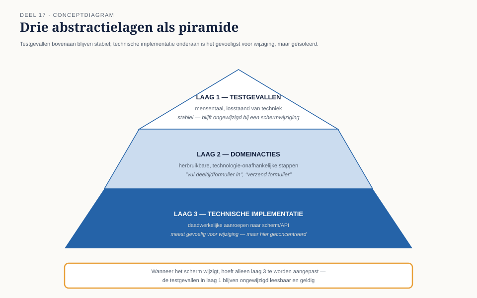
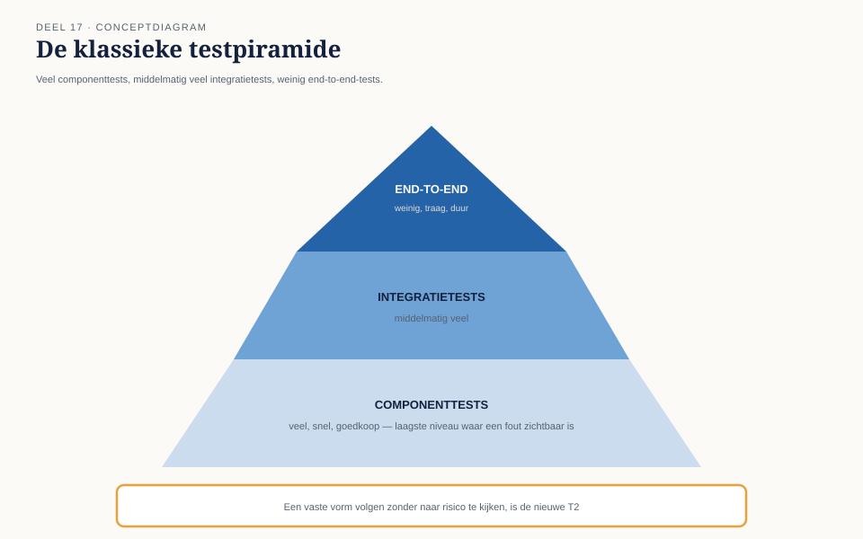

Deel 17 — Testautomatisering I: ontwerp
Slidedeck · Ductus-cursus Testen en Kwaliteitsborging · niveau 2 · deel 17 van 30 · 18 slides
Slide 1 — Titel
Testautomatisering I: ontwerp
Deel 17 · Niveau 2 Professional
Slide 2 — Statement
Achthonderd geautomatiseerde tests.
Niemand kan meer zeggen wat een falende test betekent.
Slide 3 — Statement
Automatisering zonder ontwerp
wordt geen versnelling van het testwerk —
maar een tweede systeem dat evenveel onderhoud vraagt.
Slide 4 — Sectie
1. Abstractielagen
Slide 5 — Figuur

Slide 6 — Opdracht
Opdracht 17.1 + 17.2
Herken de laag. Herstructureer een gemengde test.
35 minuten.
Slide 7 — Sectie
2. Onderhoudbaarheid als ontwerpcriterium
Slide 8 — Bullets
Drie principes
- Eén testgeval, één verantwoordelijkheid
- Herbruikbare domeinacties
- Expliciete, leesbare namen
Slide 9 — Sectie
3. Flakiness
Slide 10 — Statement
Een flaky test is zelden een slechte test.
Vaker: een eerlijk signaal
van een onopgeloste onvoorspelbaarheid.
Slide 11 — Bullets
Drie oorzaken
- Timing — controle vóór verwerking klaar is
- Gedeelde, niet-geïsoleerde testdata
- Omgevingsinstabiliteit
Slide 12 — Opdracht
Opdracht 17.3 — Diagnosticeer flakiness
Drie mogelijke oorzaken, hoe onderzoek je ze —
niet: hoe los je ze op.
20 minuten, groepjes van drie.
Slide 13 — Sectie
4. Testpiramide en de kritiek erop
Slide 14 — Figuur

Slide 15 — Statement
Bij een keten waar het risico
in de overdracht zit,
kan een strikte piramide precies
het belangrijkste risico onderbelichten.
Slide 16 — Opdracht
Opdracht 17.4 — Piramide of risico?
Is de klassieke piramide verantwoord
voor het Mutatieplatform?
15 minuten, groepjes van drie.
Slide 17 — Bullets
TMAP-lens
- Automatisering = continue investering van het hele team
- De piramide is een hulpmiddel, geen wet — vorm volgt VOICE en risico
Slide 18 — Statement
Volgende keer: testautomatisering II — in de pijplijn
CI/CD, deploy vs. release, testen in productie.